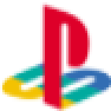
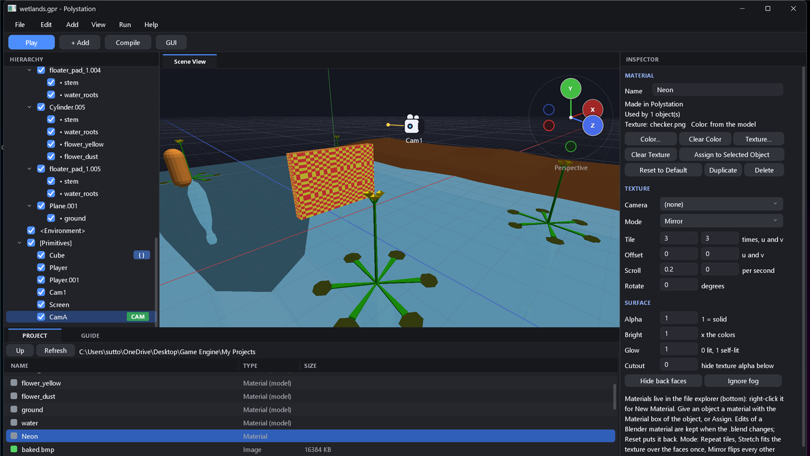
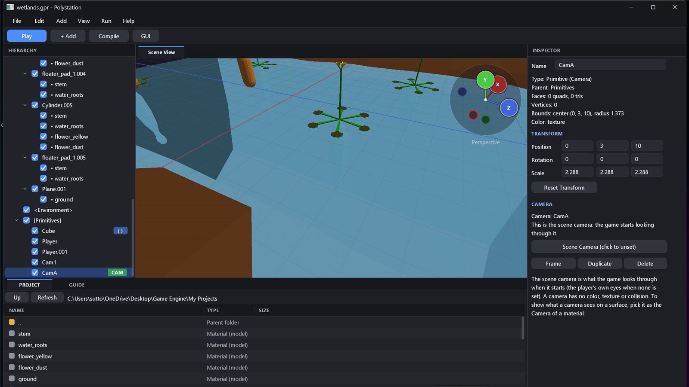

A free, PlayStation‑1 style 3D engine and editor for Windows. Written from scratch in Rust with no dependencies: its own OpenGL renderer, its own interface, its own scripting language. Build a game, press Compile, get one .exe.
Affine texture mapping, per‑vertex lighting, dithered fog and a colour‑depth setting (4, 8, 16 or 32 bits).
Hierarchy with drag and drop parenting, multi‑select, drag objects onto surfaces, a file explorer, undo, and a start page with templates.
Materials are assets. Textures (PNG, JPEG, TGA, BMP), tiling, scrolling, glow, cutout, texture modes, and a camera’s view as a texture. Blender materials import and keep your edits; reset any time.
Add Camera objects, show their view on a screen, and pick the scene camera the game starts looking through.
GScript, plus a visual block editor with wires and an eyedropper. Control objects, the player, GUI, sound, cameras and the mouse.
Text, panels, bars and buttons, with mouse modes: look, cursor, toggle or hold.
A pill‑shaped player with stairs, slopes, water, triggers, head bob and footsteps.
Open or import a .blend, UVs and multiple materials included. Reload when the file changes.
One click builds a stand‑alone game with its textures, sounds and scripts inside.
An AI assistant can drive the editor over MCP: add objects, edit materials, play, screenshot.


polystation.exe from the releases, installs it for your user, adds a Start menu entry and registers .polystation project files.Windows may show a SmartScreen warning because the installer is not code‑signed. Choose More info > Run anyway.
To remove it completely, use Help > Uninstall Polystation, or:
polystation-setup.exe --uninstall --purgePrefer no installer? Download polystation.exe and run it from anywhere.
git clone https://github.com/GreenRu/polystation
cd polystation
cargo build --releaseNeeds a Rust toolchain on Windows. The engine is target/release/polystation.exe, the installer is polystation-setup.exe. There are no crates to download: the project has zero dependencies.
Using it with an AI assistant: see MCP.md.